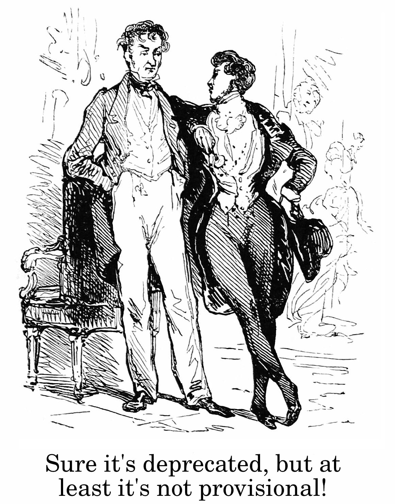

<h1 style="font-size: 3em">The Stable Interface Paradox</h1> <br/> <br/> <br/> <span style="font-size: 2.5em"> Paul Ganssle </span> <br/> <br/> <img src="images/pganssle-logos.svg" height="40px" alt="@pganssle"> <br/> <br/> <span style="font-size: 1em;"><em>This talk on Github: <a href="https://github.com/pganssle-talks/pyconf-hyderabad-2020-stable-interface">pganssle-talks/pyconf-hyderabad-2020-stable-interface</a></em> </span> <br/> <a rel="license" href="https://creativecommons.org/publicdomain/zero/1.0/"> <img src="external-images/logos/cc-zero.svg" height="45px"> </a> <br/> Notes:
<span style="font-size: 4em; font-weight: bold">✨ My Trip to Hyderabad ✨</span> -- <img src="images/plane-ride.webp" alt="An animated image of Paul in a simulated airplane. Paul has the window seat." style="height: 850px" id="splash" /> <div class="caption">Always bring a book on an 18 hour flight...</div> -- <img src="images/biryani-00.jpg" alt="Paul eating biryani at a table" style="height: 875px" class="fragment disappearing-fragment nospace-fragment fade-out" id="splash" data-fragment-index="0" /> <div class="caption fragment disappearing-fragment nospace-fragment fade-out" data-fragment-index="0"> First thing to do in Hyderabad: get a biryani! </div> <img src="images/biryani-01.jpg" alt="Paul eating biryani at a table" class="fragment disappearing-fragment nospace-fragment fade-in" style="height: 875px" id="splash" data-fragment-index="0" /> <div class="caption fragment disappearing-fragment nospace-fragment fade-in" data-fragment-index="0"> Delicious! Plus it only took 4 minutes to cook! </div> -- <img src="images/cricket_awake-scaled.jpg" alt="Paul prepares to watch a game of cricket!" style="height: 850px" class="fragment disappearing-fragment nospace-fragment fade-out" data-fragment-index="0" id="splash" /> <div class="caption fragment disappearing-fragment nospace-fragment fade-out" data-fragment-index="0"> Watching a cricket match </div> <img src="images/cricket_asleep-scaled.jpg" alt="Paul prepares to watch a game of cricket!" style="height: 850px" class="fragment disappearing-fragment nospace-fragment fade-in" id="splash" data-fragment-index="0" /> <div class="caption fragment disappearing-fragment nospace-fragment fade-in" id="splash" data-fragment-index="0"> 15 minutes later </div> -- <img src="images/haleem-scaled.png" alt="Home-made haleem in a ramekin" class="fragment disappearing-fragment nospace-fragment fade-out" id="splash" data-fragment-index="0" /> <div class="caption fragment disappearing-fragment nospace-fragment fade-out" data-fragment-index="0"> Trying my hand at making haleem. </div> <img src="images/eating_haleem-scaled.jpg" alt="Paul eating 'haleem', which turns out to actually be oatmeal with food coloring" style="height: 850px" class="fragment disappearing-fragment nospace-fragment fade-in" id="splash" data-fragment-index="0" /> <div class="caption fragment disappearing-fragment nospace-fragment fade-in" data-fragment-index="0"> Had to substitute some ingredients, though... </div>
<blockquote class="callout"> Given enough eyeballs, all bugs are shallow. <footer>Linus's Law (from The Cathedral and the Bazaar)</footer> </blockquote> -- <img src="images/setuptools-obscure-bug.png" alt="An comment on setuptools issue #2129 from jaraco. The text reads: This might be a contender for one of the most obscure bugs I've seen. Not only does it depend on the fact that your last name begins with 'egg' but it also depends on the fact that the egg-prefixed name appears in the last segment of the pathname, and it depends on the fact that you're on Windows, which provides compatibility with the decades-old 8.3 convention. I suspect there's another factor at play too that's causing the 8.3 filename to be used instead of the proper full filename."/> <br/> <div class="caption">From <a href="https://github.com/pypa/setuptools/issues/2129"><tt>setuptools</tt> issue #2129.</a></div> -- <img src="images/bpo-1875-syntax-error.png" alt="bugs.python.org issue #1875, wherein if 0: return outside of a function does not raise a SyntaxError" /> ```python >>> def f(): ... if 0: ... break # This is a syntax error! ... print("Hello") ... >>> f() Hello ``` <!-- .element: class="fragment" style="max-width: 60%"--> -- <img src="images/bpo-35364-fromtimestamp-ignores-inheritance.png" alt="bugs.python.org issue #35364, wherein fromtimestamp() ignores inheritance if the time zone specified is not None" /> Notes: - Requires user to have subclassed `datetime.datetime` - Happens because: - `.fromutc()` uses datetime artihmetic - datetime arithmetic (used to) always return `datetime.datetime`, even in subclasses -- <blockquote class="callout"> <span class="fragment disappearing-fragment nospace-fragment fade-out" data-fragment-index="0">No battle plan survives contact with the enemy.</span> <span class="fragment nospace-fragment fade-in" data-fragment-index="0">[N]o plan of operations extends with any certainty beyond the first contact with the main hostile force.</span> <footer>Helmuth von Moltke the Elder</footer> </blockquote> -- <img src="external-images/fair-use/cats-bowls.jpeg" alt="An image of three bowls of cat food neatly laid out labeled 'Developer: Makes a simple, intuitive UI' above an image of three cats climbing on top of one another to eat out of the bowls at odd angles and obviously interfering with one another, labeled 'Users'" class = "fragment nospace-fragment fade-out disappearing-fragment" data-fragment-index="0" style="height: 800px" /> <img src="external-images/fair-use/licking-cup.gif" alt="An animated image of a cartoon man trying to drink from the bottom of a cup, then lick the side of it, then drink from it without his arms, all failing to get any water in a comedic way" class = "fragment nospace-fragment fade-in disappearing-fragment" data-fragment-index="1" style="height: 600px" /> -- # Desire paths <img src="external-images/desire-path-modified.jpg" alt="A paved path diverges from a 'desire path' — an area of grass worn from use" id="splash" /> -- # The Curse of Knowledge <img src="external-images/charades-modified.jpg" alt="A woman making some sort of claw gesture with her hands during a game of charades" id="splash" /> -- # Unfamiliar environments <center> <video autoplay="true" loop="true" muted="true" width="720"> <source src="external-images/fair-use/rtl-broken-whatsapp.mp4" type="video/mp4"> Your browser does not support the video tag. </video> </center> From <a href="https://twitter.com/_saljam/status/1255197629123878914?s=20">@_saljam's April 2020 Twitter Thread</a> on RTL bugs.
<blockquote class="callout"> With a sufficient number of users of an API, it does not matter what you promise in the contract: all observable behaviors of your system will be depended on by somebody. <footer><a href="https://www.hyrumslaw.com">Hyrum's Law</a></footer> </blockquote> -- <img src="images/bpo-37500-no-longer-optimized.png" alt="bugs.python.org issue #37500, where in if 0: is no longer optimized" /> -- <blockquote class="callout" style="font-size: 1.25em"> The real-word implications from my world are this: if your code has "if 0:" clauses in it, and you measure its coverage, then because the lines have not been optimized away, coverage.py will think the lines are a possible execution path, and will be considered a miss because they are not executed. This will reduce your coverage percentage. <footer>Ned Batchelder, <a href="https://bugs.python.org/issue37500#msg347362">bpo-37500</a></footer> </blockquote> <br/> ```python def f() -> int: if 0: print("This code is unreachable!") if not __debug__: print("Running in optimized mode!") return 3 ``` <div class="caption">This code would have 100% coverage prior to the change, but less than 100% coverage afterwards.</div> -- # Packaging in Python: A Tale of Woe <br/> In Python 2.0, `distutils` was added to the standard library. This allowed distro maintainers: <br/> <br/> 1. A standard way of converting Python projects into Linux distro packages 2. System administrators a standard way of installing them directly onto target systems <br/> <br/> Package authors would write a `setup.py` that runs `distutils.core.setup()`, and end users would execute any number of commands via `setup.py <command>` (e.g. `setup.py install` and `setup.py test`). Notes: There was not: - PyPI - `pip` - `setuptools` -- <img src="images/pypi-2003.png" alt="The PyPI website as of 2003." id="splash" /> -- <blockquote class="callout" style="font-size: 1.5em"> The sheer amount of features that Setuptools brings to the table must be stressed: namespace packages, optional dependencies, automatic manifest building by inspecting version control systems, web scraping to find packages in unusual places, recognition of complex version numbering schemes, and so on, and so on. Some of these features perhaps seem esoteric to many, but complex projects use many of them. <footer><a href="https://blog.startifact.com/posts/older/a-history-of-python-packaging.html">Martin Faasen, A History of Python Packaging (2009)</a></footer> </blockquote> -- ```bash $ pip install attrs Collecting attrs Downloading attrs-20.3.0.tar.gz (164 kB) |████████████████████████████████| 164 kB 6.1 MB/s Installing build dependencies ... done Getting requirements to build wheel ... done Preparing wheel metadata ... done Building wheels for collected packages: attrs Building wheel for attrs (PEP 517) ... done Created wheel for attrs: filename=attrs-20.3.0-py2.py3-none-any.whl size=49337 sha256=a6b44de70bcc7834e967dbea0b96c5f1ad03d438227c1e78f5dcbfbeb338607c Stored in directory: ~/.cache/pip/wheels/a4/3a/c7/ae1b7ae92f377604b64cab81594eb43ea843376139f34cc8a5 Successfully built attrs Installing collected packages: attrs Successfully installed attrs-20.3.0 ``` <br/> <div class="caption"><tt>pip</tt> (which stands for <em><tt>pip</tt> installs packages</em>) was introduced by Ian Bicking in 2008.</div> -- <img src="external-images/gathering-storm.jpg" alt="Dark clouds gather over New York city" id="splash" /> Notes: The packaging landscape was looking better than ever with `pip`, PyPI, `setuptools`, `easy_install` and `distutils`, and a number of other innovations I haven't mentioned here, but there were dark clouds gathering on the horizon. The problem is that everything here was being done in an ad hoc fashion. People were building on top of one anothers' work, but there was no clearly specified interface. The interface you were targeting was "works with what people are already doing", which leaves less and less room for innovation when you can't meaningfully compete without being bug-for-bug compatible with `setuptools`. -- # Packaging Problems - Installing a package requires executing `setup.py` - Arbitrary code execution... often as root! - Compilation is time consuming, but no standards exist for distributing or installing binaries. - No way to specify dependencies for `setup.py` <sup>†</sup> <br/><br/> - `distutils` - Largely unmaintained because of the long release cadences and the fact that changes would break arbitrary packages. - A sprawling module with a bunch of stuff unrelated to build code. <br/><br/> - `setuptools` - Monkey-patches `distutils` on import - Also integrated with `pkg_resources` and `easy_install` <br/><br/> - `pip`: - Always injects `import setuptools` as part of installation and build - Executes `setup.py` commands <br/><br/> - `distribute`: Imported as `import setuptools` <br/><br/> <span style="font-size: 0.25em"><sup>†</sup>Sort of</span> -- <div class="fragment fade-out nospace-fragment disappearing-fragment" data-fragment-index="0"> <img src="images/pep517-pep.png" alt="PEP 517 -- A build-system independent format for source trees, Created 30-Sep-2015" /> <br/> <img src="images/pep518-pep.png" alt="PEP 517 -- A build-system independent format for source trees, Created 30-Sep-2015" /> </div> <div class="fragment fade-in disappearing-fragment nospace-fragment" data-fragment-index="0"> <img src="images/pep632-pep.png" alt="PEP 632 -- Deprecate distutils module" /> </div> - [**PEP 440**](https://www.python.org/dev/peps/pep-0440) - *Version Identification and Dependency Specification* - [**PEP 453**](https://www.python.org/dev/peps/pep-0453) - *Explicit bootstrapping of pip in Python installations* - [**PEP 503**](https://www.python.org/dev/peps/pep-0503) - *Simple Repository API* - [**PEP 508**](https://www.python.org/dev/peps/pep-0508) - *Dependency Specification for Python Software Packages* - [**PEP 513**](https://www.python.org/dev/peps/pep-0513) - *A Platform Tag for Portable Linux Built Distributions*
# The Stable Interface Paradox <br/> <blockquote class="callout"> The smaller the user base, the harder it is to design an appropriate interface, but the larger the user base, the harder it is to change your interface. </blockquote> -- <img src="images/stable-interface-graph.png" alt="A graph indicating that ability to change an interface decays as number of users increases, while user feedback increases." />
# Second-mover advantage and Network Effects <img src="external-images/hermit-crabs.jpg" alt="Several Hermit crabs on a beach on Howland Island NWR" id="splash" />
<span style="font-size: 5em; font-weight: bold">What should we do?</span> -- # UX Research <img src="images/pip-ux-design.png" alt="Screenshot from pip's documentation about the UX design research they are undertaking" /> <div class="caption"><tt>pip</tt> is undertaking <a href="https://pip.pypa.io/en/stable/ux_research_design/">UX Research</a> to anticipate user needs.</div> -- # Pre-releases <img src="external-images/python-release-cadence.png" alt="A chart from PEP 602 illustrating Python's annual release cadence, including pre-alpha, alpha and beta phases." style="max-height: 750px" /> <div class="caption">CPython makes extensive use of pre-releases.</div> -- # Deprecations <img src="images/easy_install_deprecated.png" alt="A warning on the `easy_install` documentation indicating it is deprecated" style="width: 1000px" /> <br/> <br/> <img src="images/setup-py-test-deprecated.png" alt="A warning on the documentation for setup.py test indicating that it is deprecated" style="width: 1000px" /> <br/> ``` $ python2.7 -m pip list DEPRECATION: Python 2.7 reached the end of its life on January 1st, 2020. Please upgrade your Python as Python 2.7 is no longer maintained. pip 21.0 will drop support for Python 2.7 in January 2021. More details about Python 2 support in pip, can be found at https://pip.pypa.io/en/latest/development/release-process/#python-2-support Package Version ---------- ------------ pip 20.1.1 setuptools 39.0.1 ``` -- # Deprecations <img src="images/hn-comment-packaging.png" alt="HN Comment, text reads: Python Packaging is not hard anymore \n Would you tell us which is the 'right way to do it' nowadays? Possibly, in a maintainable, kind-of-officially supported way that doesn't change or disappear in a few months? \n Please note: I use Python professionally since 2005, I've been involved in a lot of Python packaging for production apps (including giving some talks on the bad state of Python packaging at Europython around 2010) and I had followed closely the then-failed distutils2 effort. And I still don't know what's the 'right and easy way to do it'." /> <br/> <br/> <img src="images/victor-stinner-twitter-20y.png" alt="Tweet from Victor Stinner: I'm using Python for 20 years and I only know 'python http://setup.py install' or 'pip install something' commands. Hopefully, I didn't learn setup.cfg or pyproject.toml new things, since it seems like the latest hype packaging project is deprecated 6 months later :-)" /> -- # Provisional interfaces <div class="fragment disappearing-fragment nospace-fragment fade-out" data-fragment-index="0" style="display: flex; flex-direction: column;"> <img src="images/asyncio-provisional.png" alt="The asyncio module was considered provisional in Python 3.5" /> <img src="images/pep484-type-hints.png" alt="PEP 484: Type Hints, which was created in September 2014 but is still Provisional" /> <div class="caption">Marking an interface as provisional is a variation on pre-releases.</div> </div> <div class="fragment disappearing-fragment nospace-fragment fade-in" data-fragment-index="0">  </div> -- <div style="font-size: 5em; font-weight: bold" class="fragment fade-out disappearing-fragment nospace-fragment" data-fragment-index="0" > What should we do? </div> <img src="external-images/bunker-entrance-modified.jpg" alt="The entrance to a bunker in the woods" id="splash" class="fragment disappearing-fragment nospace-fragment" data-fragment-index="0" /> <div class="caption fragment disappearing-fragment nospace-fragment" data-fragment-index="0" > A secret bunker in Sweden where we can hide out from the consequences of our hubris.</div> </div>
<img src="external-images/vermeer-woman-with-a-balance-modified.jpg" alt="A cropped version of Johannes Vermeer's Woman with a Balance; a painting of a seemingly pregnant woman holding a small balance scale. (Scholarly opinion is that she is not supposed to be pregnant for various reasons, but to modern eyes she looks heavily pregnant)." id="splash" /> -- # Churn budget <img src="external-images/piggy-bank.jpg" alt="A smashed piggy bank with a UK £20 note and some coins inside" style="height: 600px" id="splash" /> - How important is the change? + <!-- .element: class="fragment" --> How many people will it affect? + <!-- .element: class="fragment" --> How painful will it be for affected users? + <!-- .element: class="fragment" --> How much goodwill have you spent recently?
<img src="external-images/monkey-00.jpg" id="splash" alt="A monkey staring off into the distance" class="fragment nospace-fragment disappearing-fragment fade-out" data-fragment-index="0" /> <img src="external-images/monkey-01.jpg" id="splash" alt="A monkey looking playful" class="fragment nospace-fragment disappearing-fragment fade-in" data-fragment-index="0" />